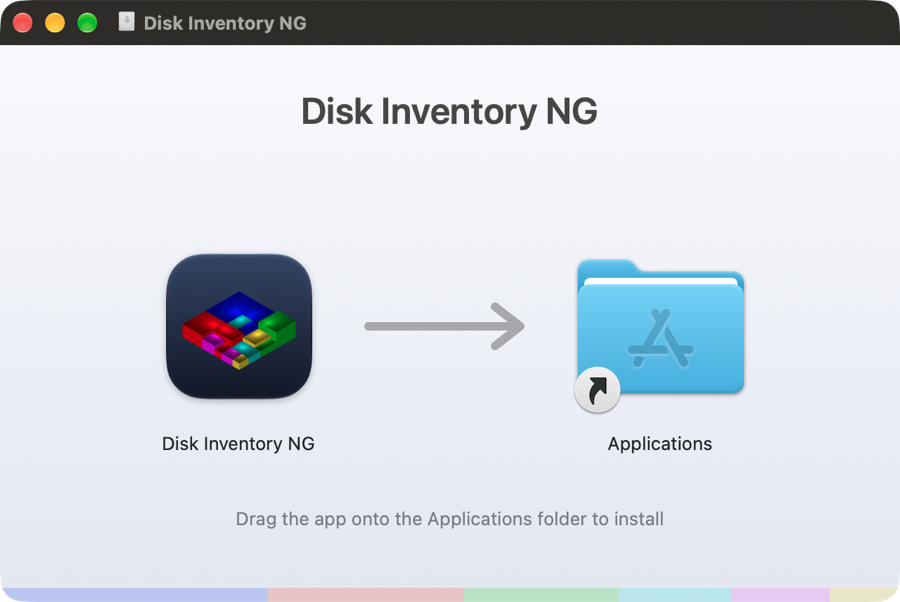

Your whole disk, at a glance
Every file is a rectangle. The bigger the file, the bigger the rectangle, and the colour tells you what kind of file it is. Forgotten downloads, caches and virtual machine images stand out straight away.
Cushion treemap
A squarified layout with 3D cushion shading, so nested folders stay readable even with millions of files.
Three linked views
Folder hierarchy, treemap and file kinds. Select a file anywhere and the other views follow.
Fast
Scans folders in parallel on every CPU core: about 1.4 million items in under 7 seconds when the disk is cached.
File kinds
Total size and count for every file type, coloured to match the treemap. Click a type to list its files.
Find and clean up
A searchable list of the largest files, an inspector, Show in Finder or Explorer, Move to Trash, and rescan just the folder you cleaned up instead of the whole disk.
Zoom anywhere
Double-click or press ⌘/Ctrl ↓ to zoom into a folder, and ⌘/Ctrl ↑ to zoom back out. Mounted volumes are listed on launch.
Install
Get the package for your system from GitHub Releases:
- macOS (Apple Silicon & Intel): open the
.dmgand drag the app onto Applications. The first time, right-click it and choose Open. - Windows 10/11: unzip and run Disk Inventory NG.exe. If SmartScreen warns, choose More info → Run anyway.
- Linux on PCs (x86_64) and Raspberry Pi (64-bit arm64 and 32-bit armhf): make the
.AppImageexecutable and run it, or unpack the.tar.gz.
Or build from source:
git clone https://github.com/surak/diskInventory-NG.git
cd diskInventory-NG
cargo run --release
Thank you, Tjark
This project would not exist without the original.
Disk Inventory X by Tjark Derlien was, for many years, the tool Mac users reached for when their disk was mysteriously full. Its idea of three synchronized views (folder hierarchy, cushion treemap and file kinds) is the design Disk Inventory NG follows, and our app icon is a homage to its isometric 3D treemap.
Thank you, Tjark, for creating Disk Inventory X, for giving it to the world for free and as open source, and for showing how useful a picture of your disk can be. Disk Inventory NG is our attempt to carry that idea forward, on modern macOS and now on Windows and Linux too.
Disk Inventory X itself built on earlier work, and so do we:
- KDirStat by Stefan Hundhammer, whose treemap layout Disk Inventory X used, and WinDirStat, which inspired it.
- Cushion Treemaps by Jarke J. van Wijk and Huub van de Wetering (1999), and Squarified Treemaps by Mark Bruls, Kees Huizing and Jarke J. van Wijk (2000).
- Treemaps, invented by Ben Shneiderman.
Disk Inventory NG is an independent reimplementation in Rust. It contains no code or artwork from Disk Inventory X and is not affiliated with or endorsed by its author.